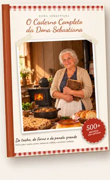

O caderninho da vó
O Caderno Completo da Dona Sebastiana, do tacho, do forno e da panela grande.
- Mais de 500 receitas das antigas
- Doces, pães, sopas, carnes, massas da colônia, conservas e bebidas
- Ingredientes e modo de fazer
- Medida em xícara e em gramas
- O segredo da vó em cada receita
- Tu recebe na hora e lê no celular
R$ 9,90
Pagamento único, no Pix ou no cartão.
Quero meu caderninho · R$ 9,90